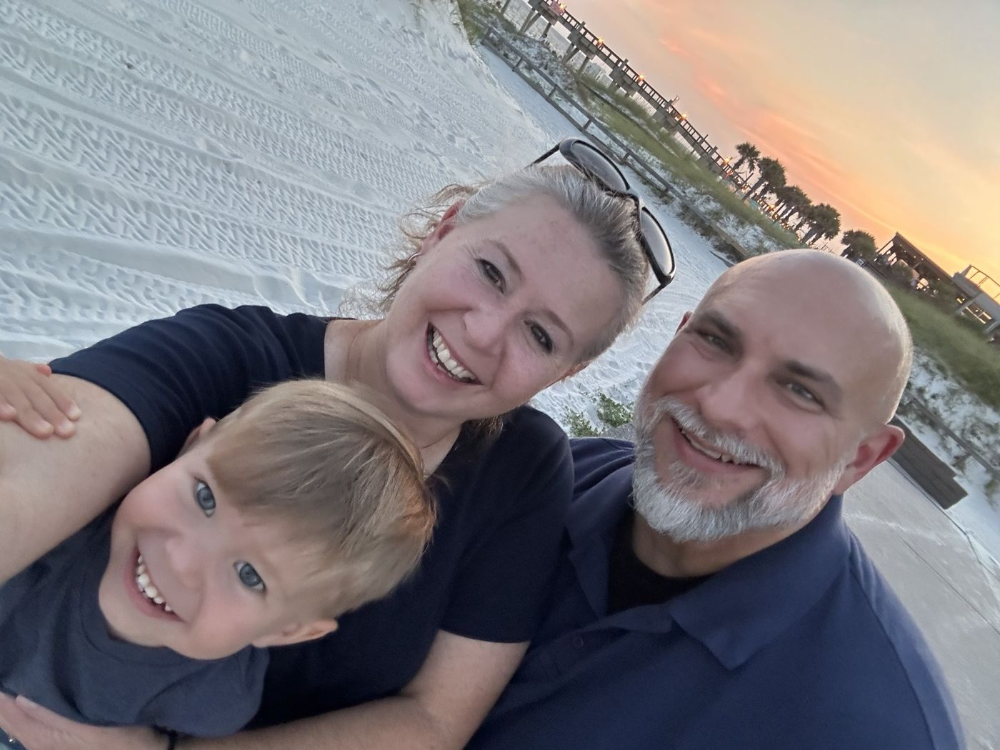

Volcán, Panama · Chiriquí / Tierras Altas
Inhabit is the public face of a family sent to plant a church in Volcán—the cool highlands of western Panama. We go to dwell, not to visit.
Deeper reading: Vision Intellectual Lineage

The household
A family going to dwell in Volcán—not a solo assignment with a brochure face. Departure: January 2027.
Meet them in the storyThe Work
Volcán sits in the Tierras Altas—coffee country, cooler air, a crossroads between Boquete and the Costa Rican border. It is a real place with ordinary people, not a branding exercise.
We are being sent under Inhabit to plant a church there: a congregation that learns to belong, believe, and behave as a people, and that treats hospitality as the ordinary form of witness. Departure is planned for January 2027.
The longer pattern behind the plant is the Mansio Society for Gospel Living—an ecclesial vision of settlements ordered by an Ordo vitae. Inhabit is how that vision takes flesh in one valley first.
Three invitations
Some will want the narrative. Some will want to underwrite the practical load. Some will want to pray and receive word when there is something worth saying. All three matter; none of them require performance.
The Pattern
Publicly, this site speaks of a church plant. Underneath it sits a thicker claim: that the gospel forms a people who dwell somewhere long enough to become a settlement worth entering.
If you want the essay-length account of that claim, read the vision paper. If you want the reading that formed it, open the lineage. Neither page replaces the work in Volcán; both explain why the work is shaped as it is.
Partnership begins with acquaintance. If you are considering support, prayer, or a visit in due time, a plain email is the right first step.